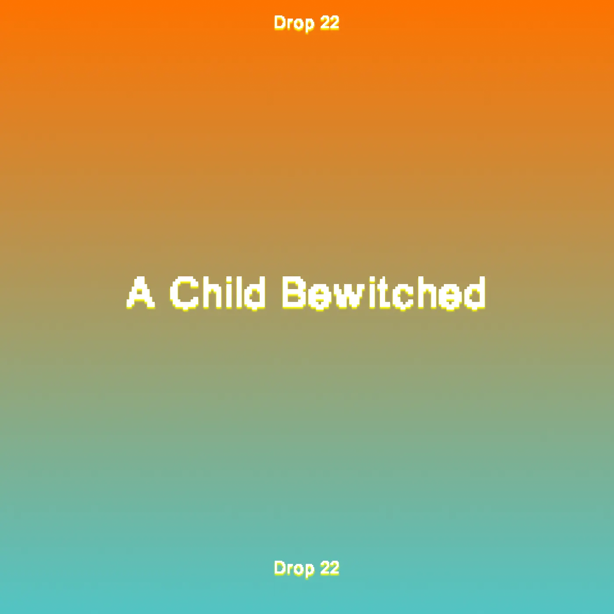

Drop #22 · December 27, 2024 · 2 min read
An End-of-the-Year Offering
Hey everyone (▰˘◡˘▰)
Here's a special end-of-year offering: a video-poem that distills my ongoing obsession with the concept of enchantment. Through 2024, this obsession branched into unexpected territories, leaving traces across REINCANTAMENTO’s work and thought. Below you'll find the poem's lyrics, complete with reference notes, alongside its video incarnation. I want to thank Jeein and Arianna for helping with the text, and Kinked for the mixing and mastering. The soundtrack in the video is “Io Suonavo Ma In Realtà Era Un Ramo Che Fischiava” by La Festa Delle Rane, contained in Misto Mame’s latest compilation “Primavera Overground”.
I want to express deep gratitude to this newsletter's readers, to everyone who's contributed to REINCANTAMENTO, and to those who trusted us with events, talks, and other interventions. In many ways, 2024 marked a full rebirth of this project, unfurling in directions I couldn't have imagined. I'm deeply grateful for all the extraordinary encounters and bonds it fostered.
More things coming in 2025. For now, wishing you all some well-earned rest ✧

Where is this enchantment I seek?
Is it there in what I speak?
At times interferring
as dissonance in the breadth
of friendly exchange.
New rhythms are offered
to inhabit together,
ephemeral concatenations.
Some other days
it is summoned
in conviviality,
in playfulness,
an invited presence,
delicate yet pervasive.
When it seats among us
the roof and sky
hold each other tightly.
Is our gaze to be enchanted
or is life itself swirling
as hives of fireflies
that once were here
and are not here anymore?
And they all know—
the Ostia poet,1
the Turin Horse,2
the Taki Hunqui,3
the witches—
how to carve a middle path
zwischen idealismus
und materialismus.
They emerge erratically:
a point, a pose, a perspective
incurvating space-time.
A sturdy optimism
no matter the odds,
a firm voracity for life.
For enchantment lives in the words
of young Basel al-Araj.4
Say his name.
Quote his words.
"What I want is my unabating wonder
and my silly smile whenever rain falls.
Every time as if the first time,
a child bewitched
by the magic of the world."
https://www.diagonalthoughts.com/?p=2107
https://en.wikipedia.org/wiki/The_Turin_Horse
https://en.m.wikipedia.org/wiki/Taki_Unquy
https://liberatedtexts.com/reviews/liberation-wonder-and-the-magic-of-the-world-basel-al-arajs-i-have-found-my-answers/